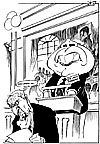

|
Dagens Inge:  Inge-galleri Tidligere artikler |
Dagens ledere Morgen: Siste ord ikke sagt Biskopen |
Aften: Ap.-fall for eget grep |
|
Kommentar Forhandlingsvilje i straffesak KJØPSLÅING: I kompliserte økonomiske straffesaker kan en "byttehandel" med tiltalte være den beste løsning for påtalemyndigheten. DAG PEDERSEN Kommentatoren er medarbeider i Aftenpostens featureredaksjon.
Peres kjenner sin besøkelsestid
|
I dag Mors plass - før og nå ETTERKRIGSTIDEN: Ingen rendyrket idyll da heller. BRITT FOUGNER Informasjonsleder i Norsk Form. | |
|
Kronikk Hvor ble det av det norske folkeforsvaret? PER BARTH LILJE Det skjer i dag en gigantisk nedbygging av det norske forsvar. Bærebjelken i våre forsvarsordninger gjennom århundrer, prinsippet om alminnelig verneplikt og "folkeforsvar", er blitt borte. Bare et mindretall av norske menn vil heretter ha en fast tildelt rolle i landets forsvar. Hva betyr dette psykologisk neste gang vi måtte bli angrepet? Spørsmålet stilles av Per Barth Lilje, engasjert i Høyre, og av yrke professor i astrofysikk. |
||